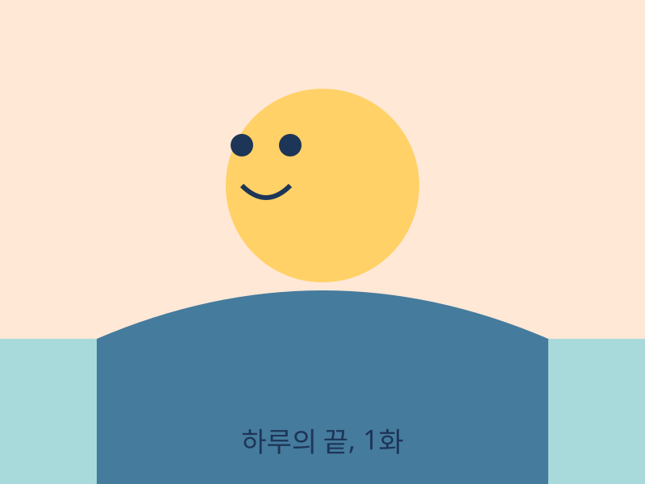

❯
웹사이트 · 앱
직접 만든 웹사이트와 앱
웹툰 · 이미지
그려낸 웹툰과 이미지

소설 · 글
써 내려간 소설과 글
# 별빛 정거장 — 1장 마지막 열차가 떠난 정거장에는 별빛만 남았다. 세린은 식어버린 커피를 손에 쥔 채, 오지 않을 사람을 기다렸다. "늦더라도 괜찮아." 그녀는 혼잣말했다. 시간은 천천히, 그러나 분명히 흘렀다.
작곡 · 음악 · 영상
만들어낸 음악과 영상
♪
내가 만든 모든 것을, 한곳에서.
총 4개의 작업직접 만든 웹사이트와 앱
그려낸 웹툰과 이미지

써 내려간 소설과 글
# 별빛 정거장 — 1장 마지막 열차가 떠난 정거장에는 별빛만 남았다. 세린은 식어버린 커피를 손에 쥔 채, 오지 않을 사람을 기다렸다. "늦더라도 괜찮아." 그녀는 혼잣말했다. 시간은 천천히, 그러나 분명히 흘렀다.
만들어낸 음악과 영상